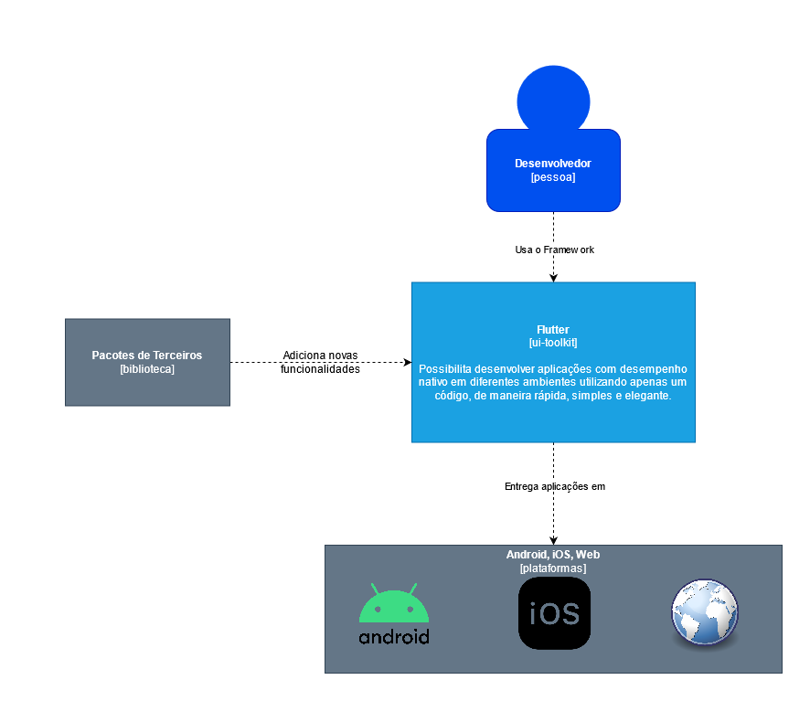

Documento Arquitetural do Flutter
Autores
Este documento foi produzido por Henrique Castro Arriel.
- Matrícula: 117111910
- Contato: henrique.arriel@ccc.ufcg.edu.br
- Projeto documentado: https://github.com/flutter/flutter
Descrição Arquitetural – Flutter
Este documento descreve parte da arquitetura do projeto Flutter. Essa descrição foi baseada principalmente no modelo C4.
Descrição Geral sobre o Flutter
O Flutter é um SDK do Google para criar aplicações mobile, web e desktop de maneira rápida e elegante utilizando apenas um código, sem necessidade de codificar para diversos sistemas. Ele promete desenvolvimento rápido utilizando o Stateful Hot Reload e diversos widgets totalmente customizaveis, além de performance nativa utilizando os compiladores nativos do Dart e interfaces expressivas e flexíveis.
Diversas empresas fizeram algumas aplicações utilizando o Flutter, como por exemplo: Nubank, Ebay e BMW.
Mais detalhes sobre o projeto podem ser vistos neste link.
Flutter
Objetivo Geral
Facilitar o desenvolvimento de aplicações multi-plataformas com alta possíbilidade de customização, elegantes e com performance nativa.
Objetivos Específicos
Ser uma ferramenta poderosa e produtiva no desenvolvimento de aplicações, expressiva e com alta performance de maneira que as aplicações aparentem ser naturais em diferentes plataformas.
Contexto

O Flutter é um framework que permite ao usuário desenvolver aplicações para diferentes sistemas operacionais, seja android, iOS, e até mesmo Web. O framework pode ter novas funcionalidades através da adição de pacotes de terceiros, criados por pessoas que queiram fazer adições válidas ao framework.
Containers

É através do Framework, feito em Dart, que o desenvolvedor realmente interage, é essa parte que fornece uma interface moderna e reativa. Inclui diversas funcionalidades que permite com que as aplicações sejam mostradas ao usuário final, como por exemplo a parte de animação, pintura do canvas e até mesmo gestos. Também é nela que são criados os Widgets, que são os componentes do Flutter que permitem reuso e combinação de classes.
O Framework envolve a Engine feita em C/C++, que expõe a parte de baixo-nível do Flutter, como classes que envolvam entrada, gráficos, e renderização de texto, sendo o núcleo do Flutter, contendo tudo necessário para dar suporte à aplicação. A Engine usa de Embedders específicos à plataforma de desenvolvimento para as aplicações serem fornecidas como qualquer outra aplicação nativa da plataforma. O Embedder funciona como ponto de entrada junto ao sistema operacional para acessar diversos serviços essenciais à aplicação.
Componentes

O Flutter é uma aplicação muito grande, portanto não são todos os componentes que estão mostrados na imagem, apenas alguns interessantes de se mostrar e bastante essenciais.
No Framework, o componente mais interessante é o Widget, é a chave de como o Flutter funciona, é ele que permite a reutilização e combinações de classes no código, permitindo que diversos pontos da aplicação possam ser feitos de maneira padronizada e responsiva. Além dele, também há o componente de renderização da aplicação, de animação e de gestos.
O componente de gestos interage também com a Engine, que possui componentes como Agendamento e Pipeline de quadros, que lida, com alta performance, como os frames serão gerenciados e apresentados na aplicação. É na Engine também que há os canais de plataforma, que interagem com o Embedder de forma a comunicar o código em Dar com o código específico do sistema-alvo.
O Embedder possui componentes como o Loop de Eventos e Empacotamento do App. O componente de empacotamento gerencia como a aplicação será utilizada pelo sistema operacional alvo de forma a ser utilizada como qualquer outra aplicação nativa, enquanto o loop de eventos gerencia os eventos que a aplicação espera.
Código
Nesta etapa não faremos diagramas que apresentam detalhes da implementação. Faremos isso mais adiante.
Visão de Informação

Os widgets do flutter são inspiradaos em React. Eles descrevem como devem ser apresentados ao usuário de acordo com suas configurações e estados. Quando o estado muda, ele reescreve sua descrição e o framework capta essa mudança e determina as mudanças mínimas necessárias na renderização para alterar o widget. Caso não seja necessário, o canvas não é atualizado.
Contribuições Concretas
Ainda não foram feitas contribuições ao projeto do Flutter.